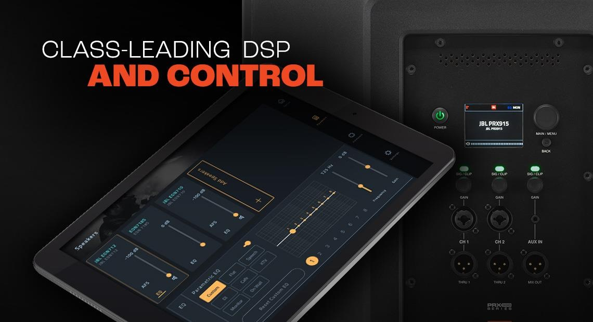
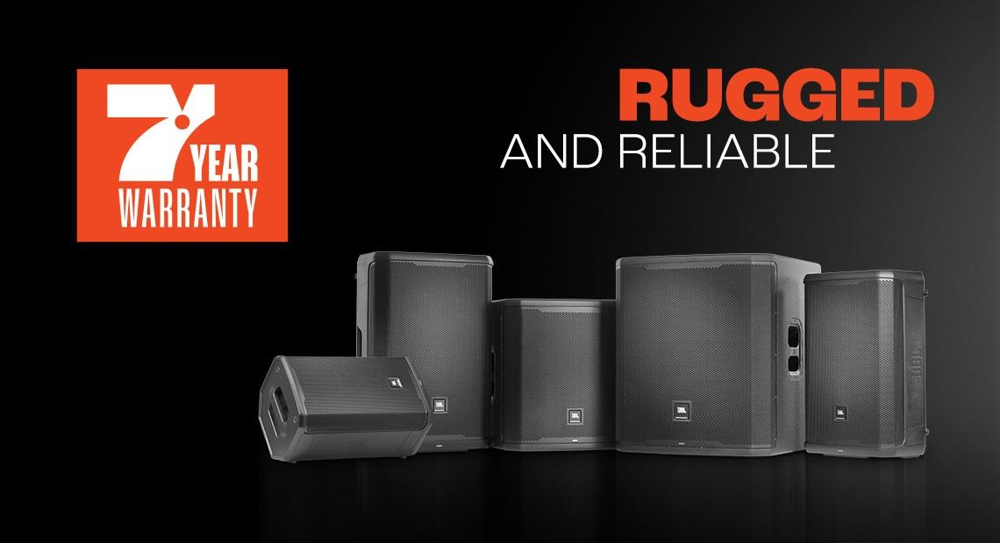
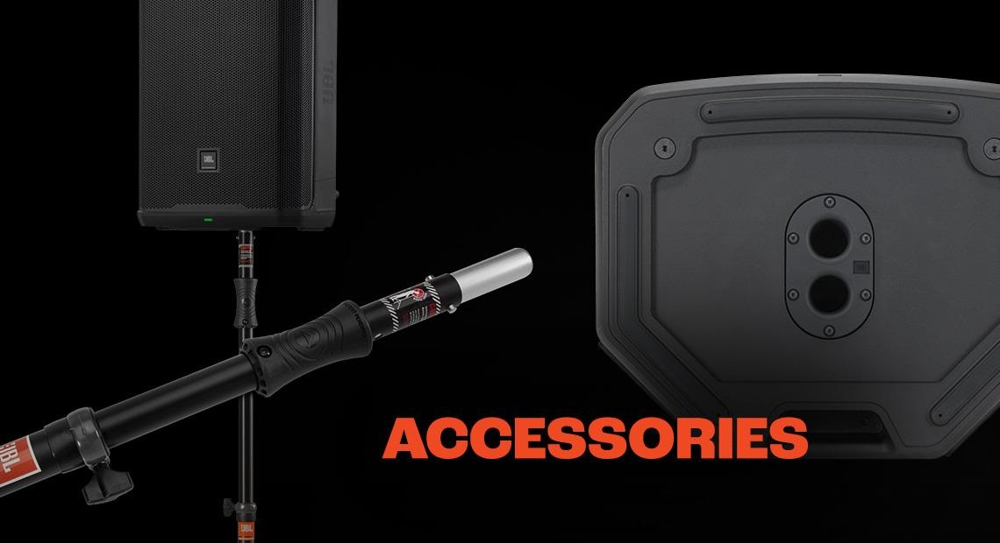

JBL PRX 900
October, 2022
JBL PRX900 Series powered loudspeakers and subwoofers take professional portable PA performance to a new level with advanced acoustics, comprehensive DSP, unrivaled power performance and durability and complete BLE control via the JBL Pro Connect ecosystem. The line, which includes three powered two-way loudspeakers and two powered subwoofers, has been entirely built from the ground up to leverage JBL’s most advanced acoustic innovations. Next-generation driver systems—powered by ultra-efficient 2,000- watt (peak) Class D amplifiers—deliver clarity and definition at maximum volume, with improved dispersion and smooth low-frequency extension. The PRX900 Series is a versatile solution for DJs and bands, music venues, rental houses, corporate A/V providers, or anyone who needs durable professional systems that deliver powerful, room-filling sound in any portable or installed scenario.

All-New Acoustic Design
From cones to cabinets, the PRX900 Series has been built from the ground up to leverage the latest JBL acoustic innovations. Patented JBL 2408H-2 1.5” compression drivers with poly-annular diaphragms and neodymium magnets provide clear, detailed high-frequency response even at maximum volume. High-quality NTC thermistors protect transducers by reducing power sent to transducers when approaching thermal limit. Innovative new horns with updated JBL Image Control Waveguides provide optimum beamwidth and directivity. Next-generation woofers with ferrite magnets deliver smooth, natural bass response, and an FEA flared port design reduces air noise and distortion. Subwoofers feature proprietary voicecoils for improved low-frequency response. It all adds up to clean, accurate, powerful sound at any volume.
Dial In Your Sound with Class-Leading DSP and Control
The PRX900 Series is fully loaded with comprehensive DSP, all accessible via the JBL Pro Connect app and onboard full-color LCD. Processing includes 12-band parametric EQ and optimized system presets; onboard dbx DriveRack technology features live and fixed Automatic Feedback Suppression, soft system limiters and 180ms of speaker delay in 100-microsecond intervals for precise time-aligned systems. The JBL Pro Connect app offers BLE functionality for system control of up to 10 speakers and line integration with JBL EON ONE MK2, PRX ONE and EON700 loudspeakers. The app provides the ability to change speaker names and flash all unit LEDs for ease of speaker identification in a full ecosystem. Access full DSP functions anywhere right from the app, including app-only features like speaker snapshots and groupings.

Versatile and Scalable
Combine PRX900 Series loudspeakers and subwoofers in a range of configurations to meet the needs of both mobile scenarios and fixed installs. PRX900 speakers feature dual 36mm pole sockets and six M10 suspension points; subwoofers feature M20 pole cups. A built-in G-Sensor gyrosensor automatically optimizes system tuning depending on monitor or mains placement.
Rugged and Road-Worthy, In It for the Long Haul
PRX900 components are housed in strong, lightweight cabinets that maximize both acoustic performance and durability. Loudspeaker cabinets are constructed from a polypropylene/talcum blend that’s optimized for rigidity, with a computer-modeled internal ribbing design that improves strength and acoustic performance. Subwoofer enclosures are built from 18mm birch, with optimized bracing that smooths out low-frequency response; cabinets have Duraflex coatings for superior durability. Like every JBL product, PRX900 Series loudspeakers and subwoofers undergo an industry- leading 100-hour stress test of all components to ensure systems perform beyond expectations in real-world scenarios. They’re so reliable that each speaker is backed with an unprecedented seven-year warranty.

Power that Performs for You
Larger live performance spaces require higher power and performance to service the needs of their customers. Driven by highly efficient 2,000W (peak) Class D power amps, the PRX900 Series provides acoustic clarity and definition with minimal power compression, even at maximum volume. A bridged woofer amp keeps current spikes out of the ground and lowers crosstalk harmonics to the compression driver, and a power factor correction (PFC) power supply stabilizes voltage load sent to the amplifier. High-quality, high-linearity inductors deliver high power efficiency and low total harmonic distortion, and low-noise, low-distortion input gain staging optimizes range and headroom for a diverse gain requirements. High-quality DAC and ADC provides near-lossless audio conversion. Producing up to 134 dB output down to 30 Hz, systems effortlessly support large performance spaces with high power and performance needs. And with a full-bandwidth CMRR (Common Mode Rejection Ratio) greater than 55 dB and THD (total harmonic distortion) rating of 32 db.
The Accessories You Need
Your PRX900 system isn’t complete without essential accessories including universal yoke mount, transport speaker bags and dependable high-quality mounting poles and tripod stands for quick, reliable setup. JBL offers durable speaker bags by Gator, and a variety of gas-assist and manual- adjust speaker stands built to seamlessly match your PRX900 system and provide a reliable foundation for your next gig, event or tour.